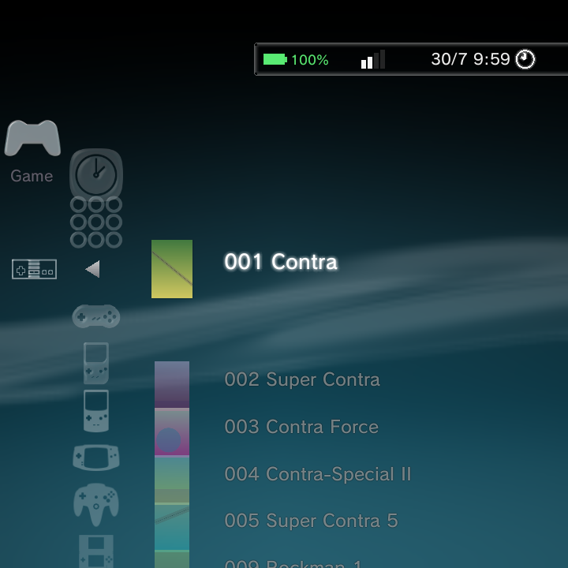

A library full of cover art looks fantastic. Nano can download boxart and game details for your whole collection automatically, and you can also set a cover by hand for any single game.

The Boxart Scraper
The scraper fetches cover art, background art, and game details (like synopsis, genre, players, and release date) from online databases and caches them on your device.
Open it at Settings > Game Settings > Boxart Scraper. From there you can set how scraping works and start a full download.
| Setting | What it does |
|---|---|
| Scraper service | Choose the source: ScreenScraper (default) or TheGamesDB. |
| Replace Icons with Boxart | Show downloaded covers in your game lists (default On). |
| Hover Background Art | Show fanart behind the highlighted game (default On). |
| Scrape Region | Prefer art from a chosen region. |
| Overwrite Existing | Re-fetch art you already have (default Off). |
| ScreenScraper account | Optional username and password. If left blank, built-in developer credentials are used. |
| TheGamesDB API key | Optional key, if you use TheGamesDB. |
| Scrape All Systems | Start downloading art and details for your whole library. |
When you choose Scrape All Systems, a background thread works through your games during idle time, so you can keep using Nano while it runs. Downloaded art is cached on the device.
You do not need to create an account to scrape from ScreenScraper. The account fields are optional and only speed things up if you have your own login.
Per-game boxart
You can also handle a single game on its own. Highlight a game and press the Options button:
| Option | What it does |
|---|---|
| Scrape This Game | Re-fetch art and details for just this game (forces an overwrite). |
| Scrape with Custom Name... | Re-scrape just this game using a name you type, without renaming the file. |
| Set Boxart | Pick any image from your Photos as this game's cover. |
| Reset Boxart | Return to the default icon. Shown only once a custom or scraped cover exists. |
| Rename / Edit Title | Change the shown name. This also becomes the search term the scraper uses, so fixing a title can help it find the right art. |
| Information | See the full details page: cover, fanart, synopsis, genre, players, rating, date, developer, publisher, and file path and size. |
If the scraper cannot find the right cover for a game, try Rename / Edit Title to correct the name first, then Scrape This Game again. If you would rather not touch the filename or the shown title, use Scrape with Custom Name... and type the name to search for just this once.

Rename and Edit Title
Rename / Edit Title lets you override a game's filename with a name of your choosing. The name you type shows everywhere the game appears: game lists, Recently Played, search results and the Information page. It is also used as the scraper's search query, so a game the scraper cannot match by its filename can be renamed to the correct title and then scraped.

Your manual rename always wins. If you rename a game and later scrape it, the scraped title does not overwrite the name you set.
Scraped titles replace the filename
Once a game has been scraped, its matched title (not the raw filename) shows in the Game category and in search, and title sorting follows that matched title. This keeps lists tidy when your files have terse or coded names.
The shown name follows a clear order of precedence:
- A manual rename you set with Rename / Edit Title (highest priority).
- The scraped title, if the game has been scraped.
- The filename, when neither of the above applies.
Custom box art
You do not have to rely on the scraper for covers. You can point any single game at your own image.
Set it in the launcher (recommended)
- Highlight the game and press the Options button.
- Choose Set Boxart.
- Pick any image from your Photos.
The image is copied into the cover cache and appears immediately as that game's cover in every theme. There is no rescan or restart needed. To go back to the default icon later, open the Options menu again and choose Reset Boxart.
Drop a file in by hand
If you would rather manage covers as files (for example, when applying a whole set at once from a PC), you can place the image yourself:
- Highlight the game and open its Information page from the Options menu.
- Note the exact cover file path shown on that page.
- Copy your own image to that path, keeping the same filename.
You can transfer the file with USB File Transfer (MTP), adb push, or the on-device Files app. The new cover shows the next time that game's art is loaded. The Information page is the reliable source for the correct path, since it names the exact cover file for the highlighted game.
Per-system scraping
You can also scrape one system at a time from the Game Systems editor. Each system has a Scrape This System action, plus optional scraper account fields to override the global setting for just that system. See Game Systems.
Related pages
- Game Systems for per-system scraper settings.
- Context Menus for every Options-menu action on a game.
- Collections & Recently Played for grouping your games.